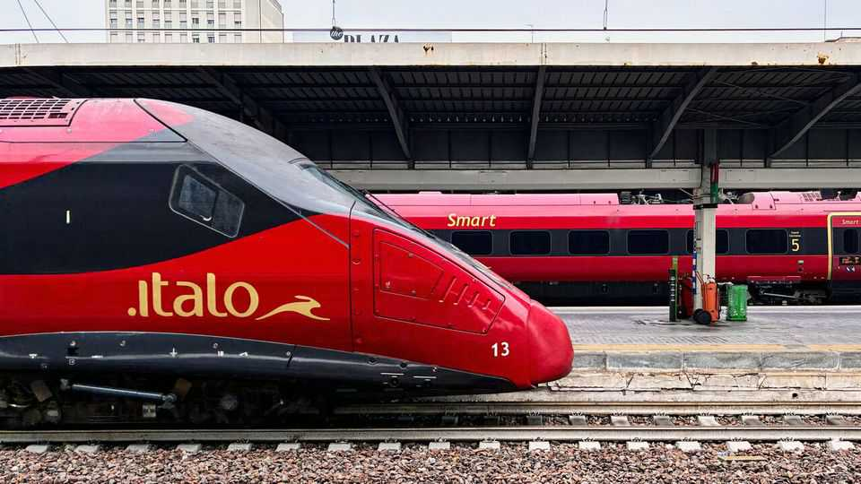

Italians may help Germany get its trains to run on time
Opening up national markets has worked wonders for European railways

Aug 6th 2026
Non-Europeans relying on stereotypes are often bemused to find that nowadays Italy’s trains are tip-top while Germany’s are in chaos. In July Friedrich Merz, the German chancellor, sacked Patrick Schnieder, his transport minister, over his inability to fix Deutsche Bahn (DB), the state-owned railway operator, whose troubles range from a dilapidated network to a bloated bureaucracy. His successor, Steffen Bilger, inherits a mammoth task. DB is notoriously resistant to change, and its unions can paralyse the country, as they did with a six-day strike in 2024.
Fortunately, Mr Bilger may get help from efficient Italians. In early July Italo, an Italian high-speed operator, obtained access to German rails via an arm of DB. By 2028 it plans to challenge DB’s dominance along two routes: Munich-Cologne-Dortmund and Munich-Berlin-Hamburg. On July 20th it signed a €3bn ($3.5bn) deal with Siemens, an engineering conglomerate, to buy 26 Velaro high-speed trains, with an option for 14 more.
“Italo’s entry is an opportunity for Germany,” says Christian Böttger of the University of Applied Sciences in Berlin. Trenitalia, Italy’s state-owned railway operator, once fiercely resisted Italo’s intrusion. But when the newcomer started running in 2012 it had a hugely beneficial effect on the country’s high-speed market. Within five years prices dropped by 40% on average, and the number of passengers more than doubled. Luca di Montezemolo, the company’s co-founder, says Germany resembles Italy before Italo.
James Hanratty of Trainline, an online train-ticket platform, thinks competition is the way forward for European countries where state-owned operators still reign. Trenitalia entered France in 2021 with Frecciarossa, a high-speed service from Paris to Lyon. By December 2025 it had expanded from nine to 14 round trips on weekdays. Renfe, the state-owned Spanish operator, entered France in 2023 with its Marseille-Madrid and Lyon-Barcelona services. Average prices that year dropped by 67% on the Marseille-Madrid route and by 17% from Lyon to Barcelona, compared with 2022.
In Spain high-speed rail liberalisation worked better still. In 2020 Renfe launched Avlo, a low-cost brand. In 2021 came Ouigo, the low-cost service of SNCF, France’s state-owned operator, followed a year later by Iryo, which is majority owned by Trenitalia. Between 2019 and 2024 prices fell by 35% on the Madrid-Valladolid route, 33% on the Madrid-Murcia route and 29% between Barcelona and Seville. Frequency on the three main high-speed corridors (Madrid-Barcelona, Madrid-Valencia/Alicante, and Madrid-Seville/Málaga) rose from 78 to 115 trips a day. The national competition authority estimates that improvements in rail from 2019 to 2024 attracted 4.8m passengers who would previously have travelled by road or air. Vueling, an airline, stopped flying from Barcelona to Madrid.
In Sweden and the Czech Republic, says Mr Böttger, competition has triggered innovation. The Czech Republic has one of the most open markets in Europe. Czeske Drahy, the state-owned incumbent, still has the largest market share, but it is under constant pressure from RegioJet and Leo Express, two private Czech operators. On June 25th Leo Express launched a service from Frankfurt via Prague to Przemysl, a Polish city on the border of Ukraine. Tickets for the 18-hour one-way journey start at just €10 ($11.50). The route shows how private operators can tackle one of European rail’s big problems: on a divided continent, routes that cross multiple borders are typically underserved by state-owned railways.
Not all countries need competition to achieve excellence. Switzerland's state-owned operator offers some of the best service on the continent. But Switzerland is small and densely populated, and has invested in its rail network lavishly and continuously for decades.
Mr Bilger has told Germans not to expect any miracles. But he might find that competition from Italians does wonders to help reform DB. And both the state-owned incumbent and Italo could soon get more competition from Italy. Trenitalia is exploring an entry into Germany’s high-speed railway market too. ■